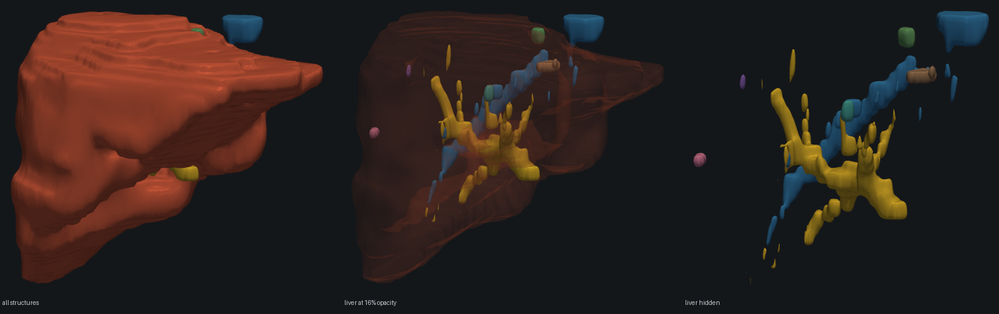

Reading, measuring and viewing medical volumes
Working guide to nrrdvis: reading volumes, measuring structures in
millimetres and litres, and turning a segmentation into a 3-D viewer. All output shown is from real
runs.
00Quick check
The demo builds a synthetic torso, measures every structure and writes a viewer. No data required.
pip install -e ".[all]" nrrdvis demo -o demo.html
wrote demo.html (902 KB) structure volume (mL) max Ø (mm) surface (cm²) sphericity parts organ 486.05 141.3 331.0 0.903 1 lesion_1 2.24 16.1 7.8 1.000 1 lesion_2 0.59 10.4 2.8 1.000 1 lesion_3 * 0.35 8.4 1.8 1.000 1 bone 30.58 145.3 67.0 0.706 3 * spans under 5 voxels on its thinnest axis; shape figures are indicative only
Open demo.html in a browser. The footnote marks lesion_3 as too thin on
its short axis for its shape figures to mean much; its volume and diameter are unaffected.
01Volumes carry their spacing
A volume is voxels plus the millimetres-per-voxel needed to interpret them. Held in separate variables, the first resize invalidates every measurement taken afterwards.
from nrrdvis.phantom import torso_phantom
image, labels = torso_phantom()
print(image)
print("voxel volume:", image.voxel_volume_mm3, "mm³")
smaller = image.resample(1.0) # to 1 mm isotropic
print(smaller.shape, smaller.extent_mm)Volume('torso_phantom', shape=(96, 128, 128), spacing=2.5x1.5x1.5 mm, extent=240x192x192 mm)
voxel volume: 5.625 mm³
(240, 192, 192) (240.0, 192.0, 192.0)The grid changed from 96×128×128 to 240×192×192; the physical extent did not, and is still
240×192×192 mm. Axes are (z, y, x) throughout, matching how a DICOM series arrives and
what marching cubes expects.
pydicom dataset, then called cv2.resize(img, (256, 256)).
The array changed shape; the spacing did not. Every measurement after that point was wrong by
whatever factor the resize applied.02Loading data
One function reads everything. Point it at a file or at a directory of DICOM slices.
import nrrdvis
vol = nrrdvis.load("scan.nii.gz") # NIfTI, NRRD, MetaImage
ct = nrrdvis.load("dicom_directory/") # a DICOM series
nrrdvis.save(vol, "out.nrrd") # format from the extension| Input | How | Notes |
|---|---|---|
| NIfTI, NRRD, MetaImage | load(path) | Single files, via SimpleITK |
| DICOM series | load(directory) | Ordered by ImagePositionPatient, never by filename |
| DICOM SEG | load_dicom_seg() | Returns a label map plus segment names |
| DICOM SEG, overlapping | dicom_seg_masks() | Keeps every segment intact |
Reading a real head-and-abdomen CT series from TCIA:
nrrdvis info liver_ct/
liver_ct grid (z, y, x) 89 x 512 x 512 spacing (mm) 2.5 x 0.7812 x 0.7812 field of view (mm) 222.5 x 400.0 x 400.0 voxel volume (mm³) 1.5259 isotropic no dtype int32 intensity range -2048 to 1604
trapNever sort DICOM slices by filename.
That series is named 00000001.dcm through 00000090.dcm — perfectly
natural-sortable. Yet 46 of its 88 adjacent pairs are out of anatomical order, with a mean
displacement of 31 slices. Sorting by name reconstructs noise and raises nothing while doing it.
load orders by patient position, so this cannot happen.
03Measuring a structure
Every measurement is physical. Volumes in mm³ and mL, distances in mm, all derived from voxel counts times the true voxel volume.
organ = nrrdvis.measure_label(labels, 1, "organ")
print(f"{organ.volume_ml:.1f} mL")
print(f"max diameter {organ.max_diameter_mm:.1f} mm")
print(f"sphericity {organ.sphericity:.3f}, {organ.n_components} part(s)")486.1 mL max diameter 141.3 mm sphericity 0.903, 1 part(s)
| Field | Meaning |
|---|---|
volume_mm3 / volume_ml | Voxel count × true voxel volume. 1 mL = 1000 mm³. |
max_diameter_mm | True 3-D Feret diameter, exact over the convex hull — not a per-slice approximation. |
surface_area_mm2 | Marching-cubes triangulation, calibrated against analytic spheres. |
sphericity | Equivalent-sphere area ÷ measured area. 1.0 is a sphere; a rod tends toward 0. |
n_components | Connected regions. Read §09 before trusting this one. |
resolution_limited | True when the structure spans under 5 voxels on its thinnest axis. |
04Per-lesion measurement
Aggregates mislead when one label holds several separate things: three lesions 15 mm apart report a combined max diameter spanning all of them.
lesions = nrrdvis.measure_components(labels, 2, "lesion", min_volume_mm3=50)
for m in lesions:
print(f"{m.name}: {m.volume_ml:.2f} mL, Ø {m.max_diameter_mm:.1f} mm")
print(nrrdvis.lesion_burden(lesions, reference_volume_ml=organ.volume_ml))lesion_1: 2.24 mL, Ø 16.1 mm
lesion_2: 0.59 mL, Ø 10.4 mm
lesion_3: 0.35 mL, Ø 8.4 mm
{'n_lesions': 3, 'total_volume_ml': 3.19, 'largest_volume_ml': 2.24,
'largest_diameter_mm': 16.1, 'sum_of_diameters_mm': 34.9,
'burden_percent': 0.656}sum_of_diameters_mm is what RECIST tracks between timepoints.
min_volume_mm3 suppresses single-voxel speckle in predicted segmentations.
05The viewer
The viewer renders whatever integer labels it is given, from one structure to a thirty-structure whole-body segmentation. Nothing in it is organ-specific.
nrrdvis view segmentation.nii.gz -o scene.html \
--labels "1=liver,2=tumour" --split 2 --min-volume 100wrote scene.html (12 structures, 65,532 triangles, 1,569 KB) structure volume (mL) max Ø (mm) surface (cm²) sphericity parts liver 1359.65 244.2 940.0 0.631 2 tumour_1 * 2.68 20.2 9.8 0.952 1 tumour_2 * 0.89 13.3 4.0 1.000 1 ...
Or from Python, with more control:
from nrrdvis.viewer import scene_from_labelmap, write
scene = scene_from_labelmap(
labels,
names={1: "liver", 2: "tumour"},
split_labels=(2,), # one mesh and one row per lesion
max_faces_per_structure=40_000,
)
write(scene, "scene.html")
The disconnected vessel stubs are not a rendering fault; see §09.
create_trisurf, which serialises every vertex as decimal text and inlines the whole
plotly.js bundle. The committed temp-plot.html was 18 MB for a single
structure. Meshes are now decimated to a budget and shipped as base64 binary.06Preprocessing CT
Preprocessing is declarative, so a run can be recorded next to its output.
from nrrdvis.preprocess import PreprocessConfig, run config = PreprocessConfig(window="abdomen", isotropic_mm=1.0, denoise_mm=0.0) print(config.describe()) prepped = run(ct, config)
resample to 1.0 mm isotropic; body mask with 8.0 mm closing; abdomen window
Order matters and is fixed: resample first so later millimetre kernels act on a known grid, strip the
table before windowing so the body mask sees true Hounsfield units, and window last because it destroys
the HU scale. Named windows: abdomen, liver, lung,
bone, brain, mediastinum.
Structuring elements are specified in millimetres, not voxels. A 10 mm closing bridges 10 mm whether slices are 0.7 mm or 5 mm apart, which on anisotropic data means an ellipsoid in voxel space.
07Non-CT data
Hounsfield units are calibrated, with air near −1000 and soft tissue near 0. MR, ultrasound and already-normalised data share none of that scale, so the relevant functions check first.
from nrrdvis.preprocess import is_hounsfield, apply_window
mr = nrrdvis.load("liver_mr/")
print(is_hounsfield(mr), mr.array.min(), mr.array.max())
apply_window(mr, "abdomen") # raises
apply_window(mr, "percentile") # correct for MRFalse 0 831 ValueError: 'liver_mr' does not look like Hounsfield units (range 0 to 831), so the 'abdomen' window would clip away most of its range. Use window="percentile" for MR or other uncalibrated data, or pass an explicit (level, width).
trapBoth failures used to be silent. On that liver MR,
body_mask selected 87% of the field of view, since every voxel is above −320 HU, and the
abdomen window collapsed everything from 240 to 831 into a single value. body_mask now
detects uncalibrated data and falls back to Otsu (37.9% on the same scan), and the HU window refuses
rather than destroying the dynamic range.
08A whole cohort at once
examples/cohort_report.py measures every case in a dataset in parallel and reports what
disagrees with the rest. Records stream to JSONL and the run resumes from whatever is already there,
so an interrupted scan over 131 large volumes keeps its work.
python examples/cohort_report.py /data/Task03_Liver \
--organ 1 --lesion 2 --min-lesion-mm3 100 \
--workers 20 --out outputs/liver_cohort.jsonlslice thickness (mm) 0.70 to 5.00 median 1.00 in-plane spacing (mm) 0.557 to 1.000 median 0.768 anisotropy (z / x) 1.2x median, up to 9.0x organ volume (mL) 542 to 3195 median 1592 IQR 1380-1850 organ components 1 to 1777 93 case(s) not a single connected region stray volume (mm3) 0.0 to 4573.0 median 8.8 worst 0.360% of its organ cases with lesions 117 of 131 lesions per case 1 to 62 median 3 total 753 lesion burden (%) 0.01 to 45.8 median 0.97 largest lesion Ø (mm) 10 to 241 median 40
Slice thickness spans 7× inside a single dataset. Any pipeline with kernels tuned in voxels behaves differently across these cases without saying so.
09Traps
Each was found running on real data and is covered by a test.
Component counts are a connectivity artifact
One liver label reports 395 components at face-adjacency and 27 at 26-adjacency. 232 of those are
single voxels touching the main body only at a corner, for 0.04% of the volume. Read
largest_component_fraction, or the stray volume derived from it, not the count.
Anisotropy fragments tubular structures
In the picture above the hepatic vein reports 150 components, largest holding 46%. That is the acquisition, not the annotation: at 0.887 mm in-plane against 5 mm between slices, a 3 mm vessel is sampled as isolated cross-sections.
Shape descriptors need about five voxels
Below roughly five voxels across the thinnest axis, surface area and sphericity are dominated by
sampling artifacts; volume and diameter stay usable. Those rows carry resolution_limited
and are marked with an asterisk.
Marching cubes on a binary mask overestimates area by 9%
A hard 0/1 mask traces a staircase. A 0.8-voxel Gaussian pre-smooth holds the error under 1% across the radii tested, but the same blur erases structures one voxel thick, so the isosurface falls back to an unsmoothed pass rather than returning zero. At 5 mm slice spacing a single-slice lesion is routine.
Flattening an overlapping DICOM SEG destroys segments
DICOM SEG permits overlap; an integer label map cannot represent it.
flattened naively 595 mL in 767 fragments ← wrong dicom_seg_masks() 2417 mL in 1 part ← correct
A real study carried both Liver and Liver Remnant over largely the same voxels.
Overlap now raises a warning naming what each segment lost, priority= chooses which wins,
and dicom_seg_masks() keeps them all.
10Validation
The phantom generator emits shapes with closed-form geometry, and the tests assert against that arithmetic rather than against the code's own output.
| Property | Result |
|---|---|
Sphere volume vs 4/3 πr³ | within 0.07% |
Sphere surface area vs 4πr² | within 0.6% |
Sphere max diameter vs 2r | exact to the voxel |
| Sphere sphericity | 1.000 ± 0.003 |
| Volume across three different voxel grids | within 0.5% |
| Mesh-enclosed volume vs voxel count | within 0.5% |
| Volume after 20 Taubin smoothing passes | within 0.5% |
The last row is why smoothing is Taubin and not Laplacian. Laplacian contracts a closed surface slightly on every iteration, so volume measured off a smoothed mesh drifts downward.
pytest # 164 tests, incl. 39 headless checks on the generated viewer ruff check src tests examples
11Command reference
| Command | Does |
|---|---|
nrrdvis demo | Whole pipeline on a synthetic phantom. No data needed. |
nrrdvis info FILE | Grid, spacing, field of view, dtype, intensity range. |
nrrdvis measure SEG | Physical measurements per label. --split, --json. |
nrrdvis view SEG -o OUT | Build the interactive viewer. |
nrrdvis prep CT OUT | Window, resample, strip the table. |
nrrdvis convert IN OUT | Change format, preserving spacing and origin. |
Useful flags: --labels "1=liver,2=tumour" names structures;
--split 2 breaks a label into components; --min-volume drops speckle;
--max-faces sets the triangle budget per structure.